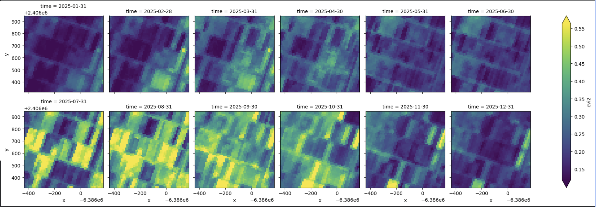

Water and rural infrastructure
Technical assessments, planning support, condition surveys, and practical recommendations.

Water · Agriculture · Infrastructure · Environment
HMServices helps organisations turn field conditions and spatial data into practical decisions for water, rural infrastructure, agriculture, environment, and sustainable development.
Discuss a projectWhat we do
Technical assessments, planning support, condition surveys, and practical recommendations.
Monitoring of land use, vegetation, water resources, and agricultural landscapes.
Mapping, satellite-image interpretation, change detection, site analysis, and spatial evidence.
Data cleaning, quality checks, analysis, dashboards, and decision-ready reporting.
Human-reviewed methods that help identify patterns, improve data quality, and communicate findings efficiently.
Technical reports, proposals, methodologies, training, and support for evidence-led work.
Evidence-led practice
Using Sentinel-2 imagery, HMServices prepared an Enhanced Vegetation Index view for the supplied parcel in the Sourou area.
The map identifies vegetation patterns for targeted field verification. It does not by itself prove irrigation effects or replace crop records, rainfall context, or field checks.

Who we support
NGOs and development programmes get credible monitoring, field evidence, and clear reporting.
Public institutions get practical engineering and spatial evidence for planning and services.
Businesses and consulting firms get reliable technical support for sites, risks, and operations.
Agricultural organisations get timely environmental information for resource and production decisions.
About HMServices
HMServices combines rural engineering, hydraulics, GIS, remote sensing, data analysis, and practical AI. Each assignment is designed to support implementation, with clear methods, stated limits, and professional judgement.
AI supports technical judgement. It does not replace field verification, professional accountability, or data protection.
Individual-consultant registration details will be added after final public review.
Start a conversation
For a future project discussion, prepare your location, objective, available information, and desired reporting period.
Email: hmservices1805@gmail.com
Phone: +226 46 48 99 99
WhatsApp: +226 46 48 99 99